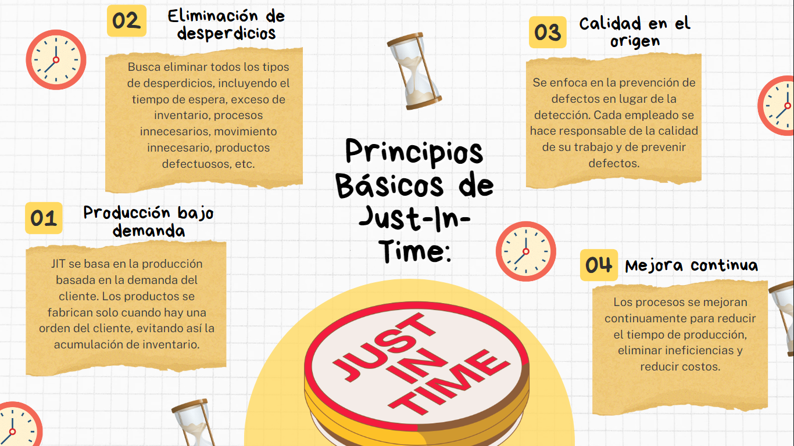
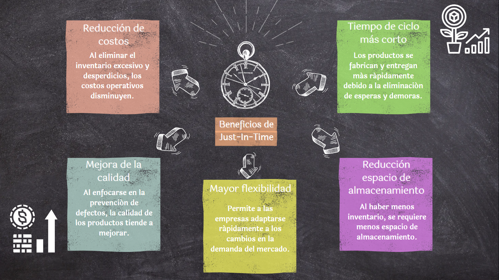

Métodos de producción Just-In-Time (JIT)
El sistema Just-In-Time (JIT) es un enfoque de gestión de la producción que se centra en producir los bienes
y servicios exactamente en el momento en que son necesarios, pero no antes. El objetivo principal es
eliminar el desperdicio (como el exceso de inventario, tiempo de espera, transporte innecesario, etc.) y
mejorar la eficiencia operativa.

Métodos Asociados con JIT:
- Producción celular: Las instalaciones de producción se organizan en células de manufactura donde equipos
multifuncionales producen un producto completo o una parte de él.
- Sistema Kanban: Es un sistema visual de gestión de inventario que ayuda a controlar el flujo de trabajo.
Las tarjetas Kanban se utilizan para autorizar la producción o el movimiento de materiales cuando se
necesita más inventario.
- Setup (Preparación) rápido: Reducción del tiempo necesario para cambiar las máquinas y equipos de un
tipo de producción a otro, permitiendo la fabricación rápida de diferentes productos en la misma línea
de producción.
- Mantenimiento productivo total (TPM): Un enfoque para mantener las máquinas y equipos en perfecto estado
de funcionamiento para evitar tiempos de inactividad y aumentar la eficiencia.
- Control de calidad total (TQC): Un sistema que involucra a todos los empleados en el proceso de mejora
continua de la calidad de los productos y procesos.
- Capacitación continua: Los empleados son capacitados regularmente para mejorar sus habilidades y
conocimientos, lo que contribuye a la mejora continua de los procesos.
Por otro lado, es una filosofía de gestión poderosa que se centra en la eliminación de desperdicios, mejora
continua y eficiencia operativa para entregar productos de alta calidad a tiempo a un costo mínimo, donde es
importante mencionar los beneficios de este sistema.

El sistema Just-In-Time va más allá de la simple gestión del inventario y la producción. Es una filosofía
empresarial completa que se centra en la eliminación de desperdicios, la mejora continua y la satisfacción
del cliente. Las organizaciones que implementan este sistema no sólo experimentan mejoras significativas en
eficiencia y rentabilidad, sino que también están mejor equipadas para enfrentar los desafíos cambiantes del
mercado para prosperar en un entorno empresarial competitivo y en constante evolución.